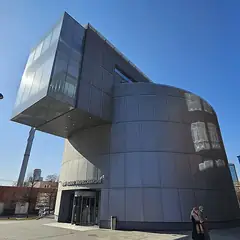
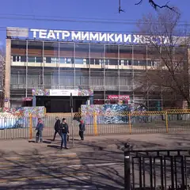
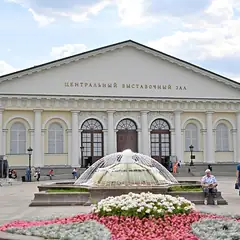
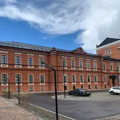

Сезон · данные на 15 октября
Куда сходить зимой в Москве
Когда на улице холодно, выручают баня, музей или план целиком под крышей, а в ясный морозный день — каток. 64 плана без прогулок по улице, 42 бани и спа и 19 мест, где зимой заливают каток, а ещё 70 музеев в каталоге.
- 64 плана
- 61 место
Планы под крышей 24 из 64
- Краснопресненские бани · Баня и хамам · м. Улица 1905 года
- 13 минут пешкомРаковарня · Раки и караоке
Финская сауна, хамам и бассейн в Краснопресненских банях, а потом через Трёхгорку в «Раковарню» — раки, морепродукты и караоке до шести утра.
Открыть план: Баня на Пресне и ракиПозвать сюда: Баня на Пресне и раки
Фото: Ludvig14, CC BY-SA 4.0 · Wikimedia Commons

- Музей русского импрессионизма · Музей · м. Белорусская
- 1 минута пешкомБольшевик Лофт · Ресторан со стендапом
Коровин, Серов и Кустодиев в Музее русского импрессионизма, а в соседнем краснокирпичном корпусе бывшей фабрики «Большевик» — ужин и стендап в Большевик Лофт.
Открыть план: Импрессионисты и стендап на фабрикеПозвать сюда: Импрессионисты и стендап на фабрике
Фото: Sergey A. Demidov, CC BY 4.0 · Wikimedia Commons
- Музей космонавтики · Музей · м. ВДНХ
- 9 минут пешкомМоскино Космос · Кинотеатр
Спускаемые аппараты и скафандры под монументом «Покорителям космоса», а потом сеанс в кинотеатре «Космос» 1964 года — на огромном экране или в крошечном зале с пуфами. Билеты недорогие.
Открыть план: Музей космонавтики и кино в «Космосе»Позвать сюда: Музей космонавтики и кино в «Космосе»
Фото: Музей космонавтики, CC0 · Wikimedia Commons
- Каро 11 Октябрь · Кинотеатр · IMAX · м. Смоленская
- 4 минуты пешкомSoprano · Караоке-бар
Поздний сеанс в «Октябре» — последние начинаются ближе к двум ночи, — а в паре минут караоке Soprano с кожаными диванами, где поют до 5 утра.
Открыть план: Ночной сеанс и караоке на Новом АрбатеПозвать сюда: Ночной сеанс и караоке на Новом Арбате
Фото: Svetlov Artem, CC BY-SA 4.0 · Wikimedia Commons

- Театр мимики и жеста · Театр · м. Первомайская
- 12 минут пешкомGallery Lounge · Кальянная с караоке
Спектакль в Театре мимики и жеста, где всё понятно без слов, а потом караоке Gallery Lounge на Сиреневом бульваре — уж там слов будет много.
Открыть план: Театр без слов и караокеПозвать сюда: Театр без слов и караоке
Фото: Kotofey2016 / Википедия, CC BY-SA 4.0 · Wikimedia Commons
- Дом Гоголя · Музей · м. Арбатская
- 4 минуты пешкомХудожественный · Кинотеатр
Дом, где Гоголь сжёг второй том «Мёртвых душ», и вечерний сеанс в старейшем кинотеатре Москвы.
Открыть план: Вий, Гоголь и киноПозвать сюда: Вий, Гоголь и кино
Фото: Shakko, CC BY-SA 4.0 · Wikimedia Commons

- Манеж · Выставочный зал · м. Охотный ряд
- 3 минуты пешкомКалейдоскоп · Гастротеатр
Выставка в Манеже, а потом иммерсивный ужин-шоу «Калейдоскоп» в «Национале» через дорогу.
Открыть план: Выставка и ужин-шоуПозвать сюда: Выставка и ужин-шоу
Фото: stroi.mos.ru, CC BY 4.0 · Wikimedia Commons
- Палеонтологический музей · Музей · м. Тёплый Стан
- 11 минут пешкомColizeum Тёплый Стан · Компьютерный клуб
Скелеты динозавров в Палеонтологическом музее, а через 11 минут пешком компы Colizeum у самого выхода из «Тёплого Стана».
Открыть план: Динозавры и катка в Тёплом СтанеПозвать сюда: Динозавры и катка в Тёплом Стане
Фото: MikSed, CC BY-SA 4.0 · Wikimedia Commons
- Московский планетарий · Планетарий · м. Баррикадная
- 2 минуты пешкомBlinkGame · Компьютерный клуб
Звёздный зал под огромным куполом планетария, а через две минуты лаунж с четырьмя PS5: сыграть вдвоём на желание.
Открыть план: Звёзды и PS5 на двоихПозвать сюда: Звёзды и PS5 на двоих
Фото: A.Savin, Free Art License · Wikimedia Commons
- Музей советских игровых автоматов · Музей-аркада · м. Кузнецкий Мост
- 7 минут пешкомДебют · Бистро с театральной концепцией
Сначала «Морской бой», «Городки» и «Танкодром» в Музее советских игровых автоматов на Кузнецком Мосту (открыт до 21), потом в семи минутах — ужин в «Дебюте» во дворе «Столешники Хаус»: меню разбито на акты, а в зале иногда играют спектакли.
Открыть план: Игровые автоматы и ужин по актамПозвать сюда: Игровые автоматы и ужин по актам
Фото: Hanno Böck, CC0 · Wikimedia Commons
- WINSTRIKE Arena · Компьютерный клуб · киберарена · м. Лубянка
- 1 минута пешкомAnvio VR · VR-арена
WINSTRIKE Arena и Anvio VR — в одном здании на Лубянке: сначала катка за ПК, потом рубилово в шлемах.
Открыть план: Киберарена и VR в одном домеПозвать сюда: Киберарена и VR в одном доме
Фото: A.Savin, CC BY-SA 3.0 · Wikimedia Commons
- Музей космонавтики · Музей · м. ВДНХ
- 12 минут пешкомColizeum ВДНХ · Компьютерный клуб
Музей космонавтики под монументом «Покорителям космоса», а потом круглосуточный Colizeum в двенадцати минутах пешком: можно засидеться до утра.
Открыть план: Космос днём, катка ночьюПозвать сюда: Космос днём, катка ночью
Фото: Музей космонавтики, CC0 · Wikimedia Commons
- Театр Табакова · Театр · м. Чистые пруды
- 1 минута пешкомАртист · Ресторан при театре
Спектакль в театре Табакова и ресторан «Артист» прямо при театре.
Открыть план: «Табакерка» и ужинПозвать сюда: «Табакерка» и ужин
Фото: mos.ru, CC BY 4.0 · Wikimedia Commons
- Музей Высоцкого · Музей · м. Таганская
- 4 минуты пешкомТеатр на Таганке · Театр
Сначала музей Высоцкого, пока он открыт, а вечером спектакль в легендарном театре Любимова и Высоцкого в четырёх минутах пешком.
Открыть план: Таганка и ВысоцкийПозвать сюда: Таганка и Высоцкий
Фото: Vladimir OKC, CC BY-SA 3.0 · Wikimedia Commons
- Центр «Зотов» · Культурный центр · м. Улица 1905 года
Выставка в круглом конструктивистском хлебозаводе, кафе и книжный с красивыми изданиями.
Открыть план: Авангард в «Зотове»Позвать сюда: Авангард в «Зотове»
Фото: MBH, CC BY 4.0 · Wikimedia Commons
- Большой Московский цирк · Цирк · м. Университет
Огромный цирк на Вернадского со сменными манежами.
Открыть план: Большой циркПозвать сюда: Большой цирк
Фото: A.Savin, Free Art License · Wikimedia Commons

- Музей криптографии · Музей · м. Фонвизинская
Интерактивный музей шифров и связи, где можно самим попробовать взломать код. Работает со вторника по воскресенье, 11–20.
Открыть план: Взломать шифр в музее криптографииПозвать сюда: Взломать шифр в музее криптографии
Фото: Leokand, CC0 · Wikimedia Commons
- Губернская сцена МХАТ им. Горького · Театр · м. Кузьминки
- 6 минут пешкомСокровища Фараона · Боулинг и бильярд
Спектакль на Губернской сцене МХАТ у «Кузьминок», а потом пять минут до боулинга «Сокровища Фараона» — в пятницу и субботу он открыт до 5 утра.
Открыть план: Губернская сцена и боулингПозвать сюда: Губернская сцена и боулинг
- Палеонтологический музей · Музей · м. Тёплый Стан
Скелеты динозавров в здании-крепости — взрослым тоже интересно.
Открыть план: ДинозаврыПозвать сюда: Динозавры
Фото: MikSed, CC BY-SA 4.0 · Wikimedia Commons
- Компонент Квест · Квест с актёрами · м. Перово
- 12 минут пешкомПеровские бани · Бани на дровах
Круглосуточный «Компонент Квест» у «Перова» — хоррор «Антихрист» или спокойный «Код да Винчи», — а потом бревенчатый сруб Перовских бань с караоке и бильярдом, тоже до утра.
Открыть план: Квест и баня до утраПозвать сюда: Квест и баня до утра
- Музей анимации · Музей · м. Ботанический сад
Куклы и декорации из мультфильмов, а ещё мастер-класс по анимации в музее на ВДНХ.
Открыть план: Мастер-класс по мультфильмамПозвать сюда: Мастер-класс по мультфильмам
Фото: Dsg-Dsg, CC BY-SA 3.0 · Wikimedia Commons
- Театр Наталии Сац · Детский музыкальный театр · м. Университет
Детский музыкальный театр на Вернадского — опера и балет с младшими.
Открыть план: Опера для всей семьиПозвать сюда: Опера для всей семьи
Фото: El Pantera, CC BY-SA 2.5 · Wikimedia Commons
- Музей Темноты · Музей в темноте · м. ЗИЛ
- 3 минуты пешкомBallers Street · Боулинг
Час в абсолютной темноте в «Ривьере», где идёшь только на звук и держась за руки, а потом в том же ТРЦ — боулинг и бильярд в Ballers Street.
Открыть план: Прогулка в темноте и боулингПозвать сюда: Прогулка в темноте и боулинг
- Раковарня · Раки и караоке · м. Краснопресненская
Раки, морепродукты и караоке до шести утра на Трёхгорке.
Открыть план: Раки и караокеПозвать сюда: Раки и караоке
Фото: Ludvig14, CC BY-SA 4.0 · Wikimedia Commons


Бани и спа 12 из 42
Неглинная ул., 14, стр. 4
Легендарные бани в центре: парная, бассейн и дворцовые интерьеры.
Подробнее и маршрут: Сандуновские баниПозвать сюда: Сандуновские бани
Фото: Vladimir OKC, общественное достояние · Wikimedia Commons
Селезнёвская ул., 15
Классические бани с мужскими и женским отделениями, от 1 600 ₽ за час. Понедельник — санитарный день.
Подробнее и маршрут: Селезнёвские баниПозвать сюда: Селезнёвские бани
Фото: Александр Спиридонов, CC BY 3.0 · Wikimedia Commons
парк «Ходынское поле»
Новое
Четыре приватных банных «кокона» с автопрограммами пара в парке Ходынское поле: от 2 000 ₽ с человека на шестерых, «Пар для пар» на двоих. До часу ночи.
просп. Будённого, 33
Новое
Бани с 1939 года, известные очень жарким паром: хаммам с мыльным массажем, соляная пещера, мужское и женское отделения, VIP-кабинеты для компании.
Подробнее и маршрут: Бани «Соколиная Гора»Позвать сюда: Бани «Соколиная Гора»
Стройковская ул., 17/1
Новое
Восточный спа у «Пролетарской»: хаммам-ритуалы от турецких мастеров, гидромассажный бассейн, программы для двоих и девичники до 12 подруг. 10–22.
Астраханский пер., 5, стр. 3
Новое
Баня старой школы у «Проспекта Мира»: русская парная и купель — 1 600 ₽ за 2 часа, для компании до 6 человек есть отдельные номера. Пн — санитарный день.
Подробнее и маршрут: Астраханские баниПозвать сюда: Астраханские бани
ул. Маршала Тимошенко, 17, корп. 2
Новое
Спа у Крылатского с турецким хаммамом и гидромассажем: программы для двоих, спа-девичники и аренда спа-зоны под день рождения. 10–22.
Варшавское ш., 34
Новое
Большие бани с 1938 года у «Нагатинской»: высший разряд с бассейном и джакузи, женский разряд и «Бани мира» — залы «Шале», «Тунис» и др. на 6–13 гостей.
Подробнее и маршрут: Варшавские баниПозвать сюда: Варшавские бани
д. Николо-Хованское, 230
Новое
Бани-бочки в Новой Москве: «Прованс» на 2–4 гостей — 8 000 ₽ за 2 часа, «Хуторянка» до 8 человек, горячий чан с травами на дровах и гриль-домик.
Подробнее и маршрут: Деревенские баниПозвать сюда: Деревенские бани
ул. Нижняя Масловка, 15, стр. 3
Новое
4 000 м² бань у Савёловской: аромапарения каждый час, общая спа-зона с хаммамом и баром для пар и тематические номера «СССР», «Азия», «Плёс» до 10 гостей.
Новая Басманная ул., 16, стр. 8
Новое
Сруб из карельского сухостоя у Красных Ворот: парение с банщиком на дровах, травяной чай с мёдом и квас. Алкоголь под запретом, программы от 35 000 ₽.
6-я Парковая ул., 21
Новое
Сталинское здание 1953 года с петровскими мозаиками и резьбой: сеанс 2 часа от 1 500 ₽, для компании — кабинеты на 5, 6 и 12 человек. Есть женские дни.
Подробнее и маршрут: Измайловские баниПозвать сюда: Измайловские бани


Где зимой каток 12 из 19
Большой Патриарший пер.
Пруд из «Мастера и Маргариты»: скамейки, кафе вокруг, зимой — каток.
Подробнее и маршрут: Патриаршие прудыПозвать сюда: Патриаршие пруды
Фото: Dimа, CC BY-SA 3.0 · Wikimedia Commons
Чистопрудный бул.
Бульвар с прудом: летом лодки и лебеди, зимой каток. Рядом Меншикова башня.
Подробнее и маршрут: Чистые прудыПозвать сюда: Чистые пруды
Фото: Vasilii Martynov, CC BY-SA 4.0 · Wikimedia Commons
ул. Крымский Вал, 9
Главный парк города: набережная, Голицынский пруд, летние веранды, а зимой — большой каток.
Подробнее и маршрут: Парк ГорькогоПозвать сюда: Парк Горького
Фото: A.Savin, Free Art License · Wikimedia Commons
Ходынский бул.
Новый парк на месте старого аэродрома: прогулочные дорожки, площадки и каток зимой.
Подробнее и маршрут: Парк «Ходынское поле»Позвать сюда: Парк «Ходынское поле»
Фото: mos.ru, CC BY 4.0 · Wikimedia Commons
Ходынский бул., 4 (ТЦ «Авиапарк», 4 этаж)
Новое
Круглогодичный каток прямо в «Авиапарке»: массовые катания каждый день, прокат без залога, в пятницу и субботу — до 23:00. Потом можно поужинать в ТЦ.
Подробнее и маршрут: Mega Ice в «Авиапарке»Позвать сюда: Mega Ice в «Авиапарке»
Красная пл., 3 (у ГУМа)
Новое
Самый открыточный каток страны: лёд у стен ГУМа, рядом Кремль и Василий Блаженный. Сеансы по часу с 9:00 до 23:30, а согреться после можно в самом ГУМе.
ул. Сокольнический Вал, 1, стр. 1
Новое
Каток на Фестивальной площади с подсвеченными бортами и кафе с балконом над льдом. По четвергам с 21:30 — скоростное катание для взрослых.
Подробнее и маршрут: Каток «Лёд» в СокольникахПозвать сюда: Каток «Лёд» в Сокольниках
ул. Крымский Вал, 9
Новое
Каток главного парка: сеансы по полтора часа с 9:30 до 23:00, прокат и заточка на месте, с пятницы по воскресенье играют диджеи. Билеты продают только онлайн.
Подробнее и маршрут: Каток в Парке ГорькогоПозвать сюда: Каток в Парке Горького
ул. Таганская, 40–42
Новое
Большой каток (4600 м²) на стадионе Таганского парка, в паре остановок от центра: прокат, заточка, гардероб и недорогие билеты — удобно собраться компанией.
Подробнее и маршрут: Каток в Таганском паркеПозвать сюда: Каток в Таганском парке
Сходненская ул., 56 (ТРЦ «Калейдоскоп», 3 этаж)
Новое
Круглогодичный крытый каток в ТРЦ у метро «Сходненская»: прокат и заточка на месте, недорогие сеансы. В этом же центре есть кинотеатр — можно совместить.
Подробнее и маршрут: Каток в ТРЦ «Калейдоскоп»Позвать сюда: Каток в ТРЦ «Калейдоскоп»
Болотная пл. (Репинский сквер)
Новое
Бесплатный каток в центре, через реку от Кремля: запись на сеанс заранее, свои коньки или прокат. Понедельник — выходной. После — прогулка по Болотной набережной.
Подробнее и маршрут: Каток на Болотной площадиПозвать сюда: Каток на Болотной площади
просп. Мира, 119 (ВДНХ, Главная аллея)
Новое
Больше 20 тысяч м² льда на главной аллее ВДНХ, вокруг фонтанов «Дружба народов» и «Каменный цветок». Бывают ночные катания до 2:30, по понедельникам каток закрыт.
Подробнее и маршрут: Каток на ВДНХПозвать сюда: Каток на ВДНХ


Как позвать
- Выбери план, место или событие — в карточке адрес, цены и маршрут в Яндекс Картах.
- Нажми «Позвать сюда» — соберётся приглашение-игра для свидания или голосование для компании.
- Отправь ссылку в любой мессенджер: тебе ответят, а компания отметит, куда и когда может. Бесплатно и без регистрации.